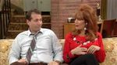

Al Bundy
 De: La Frikipedia, la enciclopedia extremadamente seria.
De: La Frikipedia, la enciclopedia extremadamente seria.
De la serie grandes personajes:
| Nacimiento
|
En el siglo XX (20 si eres tonto)
|
| Muerte
|
Suicidio
|
| Ocupación
|
Vender zapatos a viejas gordas
|
| Nacionalidad
|
Gringo
|
| Malo o bueno
|
Bueno
|
| Atentados contra la humanidad
|
Casarse con Peggy y tener 2 hijos de mierda
|
| Religión
|
Al Bundynismo
|
| Notas
|
Salio en 2 capítulos de los Simpson
|
«Hoy no Peg»
~ Al en un dia cualquiera con Peg
Al Bundy es un típico Padre de Familia de los Estados Unidos
Vida de Al
Al Bundy nació un día normal, fue a la primaria luego a la secundaria, hay se convirtió en la estrella del football, donde hizo 4 anotaciones en un juego, pero una lesión al hombro llevo a este buen hombre a su ruina y no puedo seguir con su sueño de ser jugador de la NFL, al mismo tiempo se fijo en una puta chica llamada Peggy, luego de una noche de Sexo al dejo preñada a la puta barata chica, por lo que se casan y se mudan a una casa de un suvurvio de Chicago, luego tuvieron una hija retrasada no muy inteligente, pero salio rubia y ninfomana, por lo que no estaba tan destinada al fracaso. Luego tuvieron otro hijo llamado Bud el cual se cree George Cloonie, pero es tarado, enano y feisimo (sabemos que hasta el día de hoy no deja de ser virgen). Así es la vida de este hombre el resto de sus desventuras sale en un documental sitcom llamado Casados con hijos. Ultimo detalle, Al se divorcio de Peg, se cambio el nombre a gay Jay y se caso con una latina mas joven, tenia otros 2 hijos y esa nueva familia es lo que conocemos como Modern family
 Peggy antes de violar a Al
Relaciones con otras personas
Aquí una pequeña lista de mierda las personas con las que convive al
- Peggy Bundy: La esposa flojonasa, Al la odia aunque aveces tienes sus momentos
- Kelly: La rubia tonta esta, Al siempre le jode sus citas, Kelly le saca dinero y toda cosa posible
- Bud: El pendejo este, Al lo quiere pero lo trata igual que a los demas
- Buck: El perro de la familia, Al piensa que es el único de la familia que lo quiere, pero el perro solo esta hay por no tener mejor que hacer
- Marcy
Rhoades D'Arcy: La perra, metiche, lesbiana, feminista, y demases mierda Es la vecina de los Bundy, la cual es la mejor amiga de Pegg y odia a Al. Intentando hacerle la vida imposible, pero fracasa
- Steve Rhoades: Era la única persona que Al no odiaba, por lo que le hace un favor y le aconseja que deje a la loca de Marcy, el cual Steve lo hace
- Jefferson D'Arcy: El
Supuesto mejor amigo Al, se llevan bien, aunque Al no desaprovecha de su importuno, para reírse de Jefferson.
- Seven: El niñito idiota este. Al al principio lo odia pero al final igual le toma cariño y actúa como si fuera su hijo
- Las viejas gordas que van a la zapateria: Todas son gordas, viejas feas, se compran zapatos 5 numeros mas chicos que su pie, pelean con Al, son igual de perras que Marcy
Enemigos
- Marcy
- Su familia
- Yamcha
- Jerry Springer
- Su PC
- Sus clientas
- Luke Ventura
Aliados
Autor(es):
- Yerko.diazdiazmorgendorffer
Frikipedia 2005-2016, Licencia
GFDL 1.2 - Extraído por FrikiLeaks